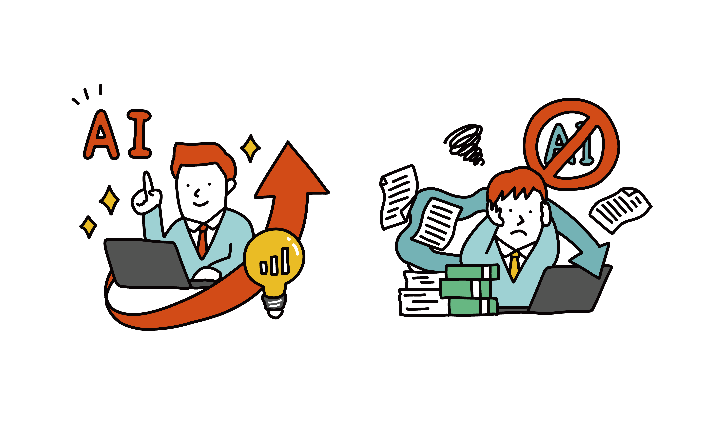

時間を生み出す
繰り返し業務や調査の下準備をAIで短縮し、意思決定に使える時間を増やします。

Executive AI Program
経営者の皆さん、AIを体験してみませんか？
AIは便利だと知っているけれど、実際にどう使えばよいのか、本当に役に立つのか。 その疑問を、日々の仕事に合わせた体験で解消します。
What we do
AIコンシェルジュは、抽象的な説明ではなく、経営者ご自身の仕事を題材に進める体験型プログラムです。 メール、資料作成、集計、調査、スケジュール調整など、毎日の業務の中からAI化しやすい場面を一緒に見つけます。

繰り返し業務や調査の下準備をAIで短縮し、意思決定に使える時間を増やします。
情報整理、要約、比較表の作成をすばやく行い、経営判断の初速を上げます。
定型作業をAIに任せる設計を体験し、確認すべきポイントも整理します。
専門用語を避け、現場に伝えやすい活用方法として持ち帰れる形にします。
AI活用の進め方を相談したい方へ

For your first step
どのツールを入れるかより先に、どの仕事にAIが効くのかを見極めることが重要です。 目の前の業務を題材にすることで、導入後のイメージが具体になります。
Use cases
大量のメールを確認し、優先度を判断して返信文を作る手間。
重要メールの抽出、返信案の作成、社内共有用の要約までを効率化します。
削減率 約80%Schedule
候補日の確認、先方への打診、決定後の登録が何度も発生する。
候補日の整理、依頼文作成、決定事項の共有まで一連の流れを短くします。
削減率 約70%Analysis
売上や実績をまとめ、見たい切り口に合わせて表やグラフを作る。
表の整形、傾向の読み取り、報告文のたたき台作成をAIで支援します。
削減率 約75%Accounting
紙やPDFの情報を転記し、後から検索できるように整理する。
読み取り、分類、リスト化の流れを設計し、月次処理の負担を減らします。
削減率 約80%導入による平均実績
年間200時間以上削減導入イメージが湧いたら、次は具体的な進め方をご案内します
Process
最初に課題をうかがい、AIで効きやすい業務を抽出。 その場で使い方を試しながら、社内で続けるための形まで整理します。

日々の仕事、困っている作業、時間がかかる場面を整理します。
AIで効率化しやすい業務と、まず試すべき範囲を見極めます。
実際の業務に近い内容でAIを使い、成果物を見ながら調整します。
継続利用のコツや、社内に共有しやすい進め方を整理します。
Price
AI体験プログラム / 1回 3時間
日々のお仕事をヒアリングしながら、その場でAIによる効率化を体験いただくプランです。

実務に合わせた体験内容を、その場で一緒に設計できます
FAQ
気になる点があれば、お気軽にお問い合わせください
Contact
AIコンシェルジュは、経営者の皆さんが本来の仕事に集中できるよう、 実務に寄り添ったAI活用の第一歩をお手伝いします。